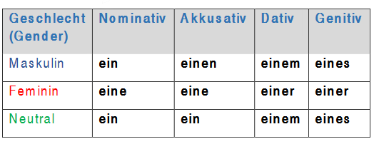

Negation
How to form a negative in German?
We simply negate the sentence by adding ‘nicht’ (not) to the verb or by using ‘kein’ (no, not a, or not any) as a negative article.
 When to use ‘nicht’?
When to use ‘nicht’?
‘Nicht’ is used when we need to negate a verb, an adjective, possessive adjective or noun with definite article.
Verb:
Sie wohnt nicht in Berlin. (She does not live in Berlin.)
Er arbeitet nicht. . (He does not work.)
Adjective:
Das Auto ist nicht neu (The car is not new)
Possessive adjective:
Das ist nicht mein Buch (This is not my book)
Nouns with definite articles:
Das ist nicht das beste Geschenk (This is not the best gift)
- When to use ‘kein’?
‘Kein’ is used as a negative article when we negate nouns that have no articles or proceeded by indefinite articles
Noun without articles:
Ich habe keine Kinder (I do not have children)
Ich habe keine Zeit. (I do not have time)
Noun with indefinite article:
Hast du ein Auto? Nein, ich habe kein Auto.
(Do you have a car? No, I do not have a car)
‘Kein’ follows the same pattern of the indefinite article (ein, eine , ein)... the same as the possessive adjective ‘mein’.

Übung (Exercise):
Turn these sentences into negative.
- Ich komme aus Deutschland
- Mein Vater hat ein Auto
- Er ist müde
- Meine Mutter ist Krank
- Das ist mein Stift